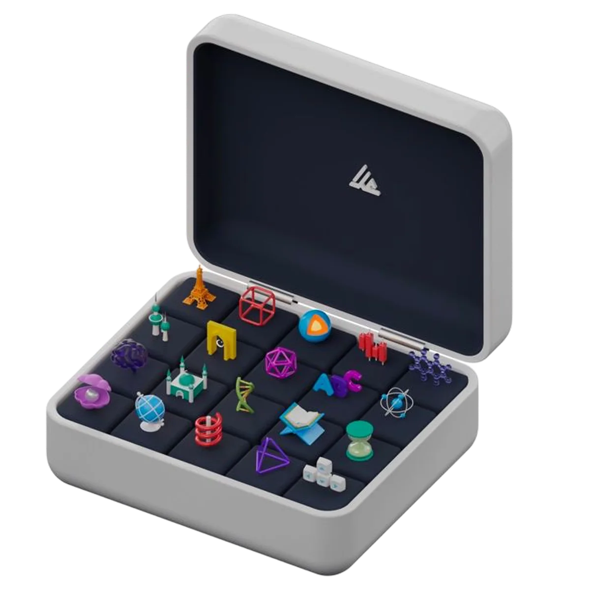
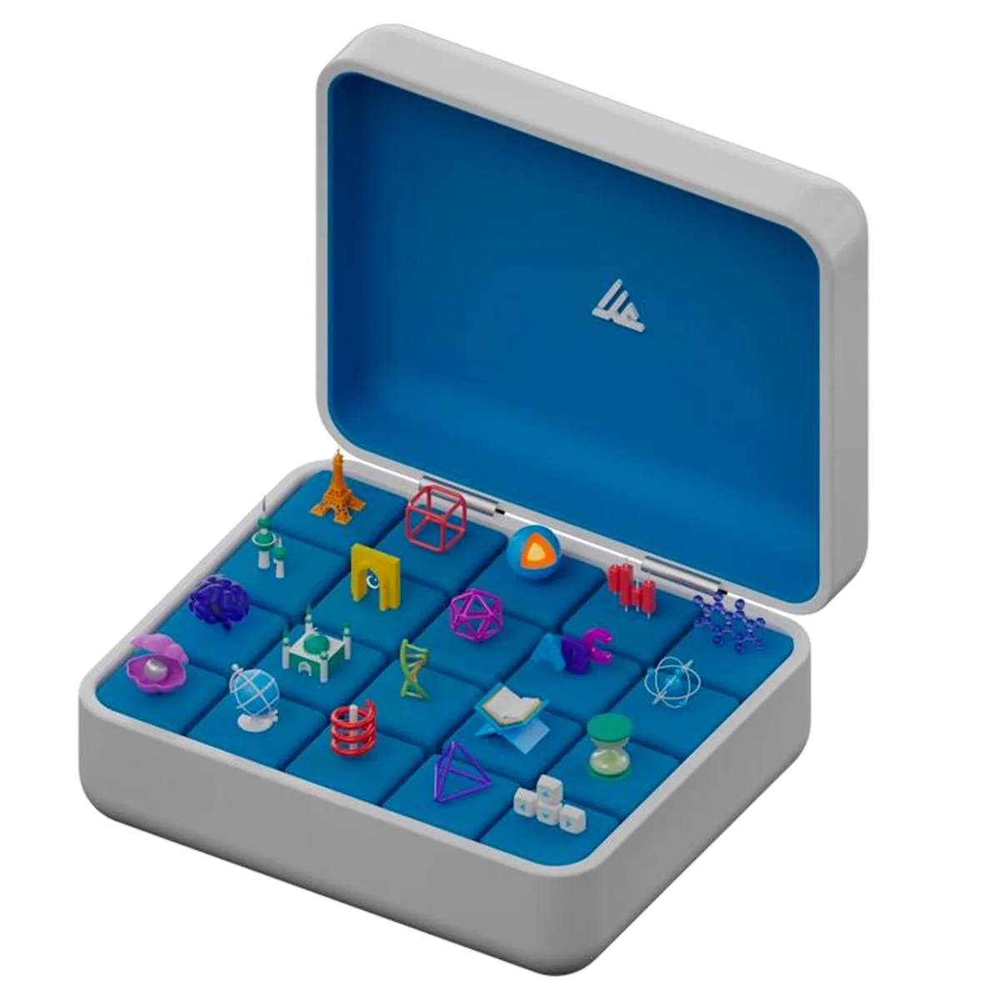
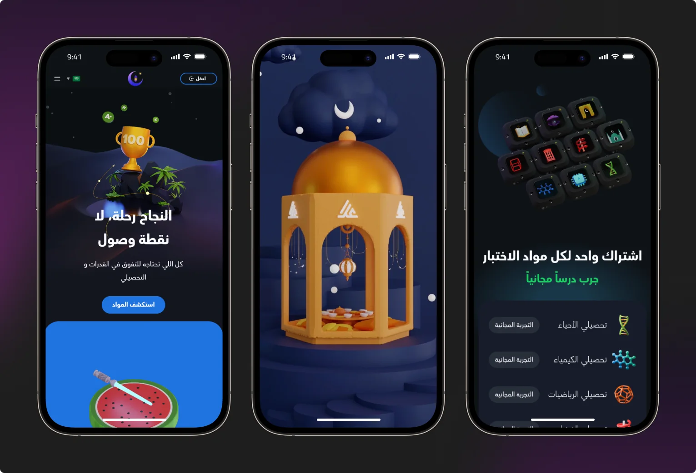
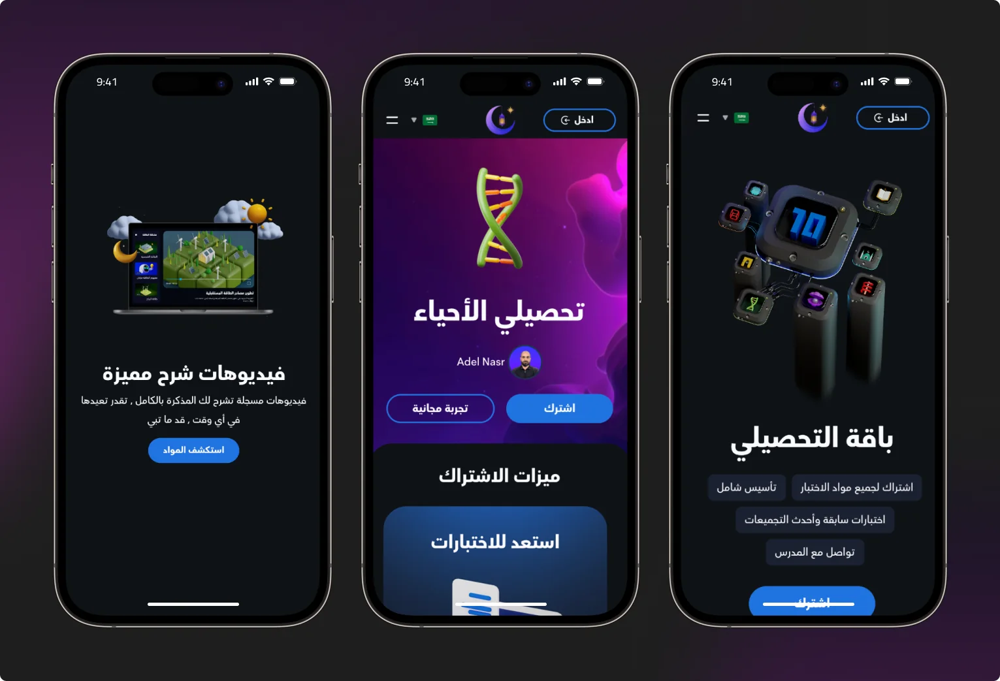
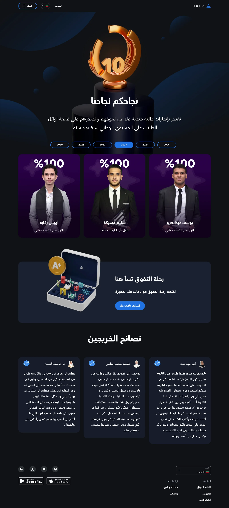
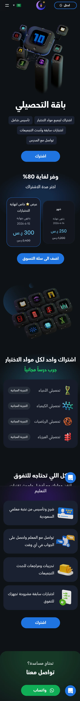
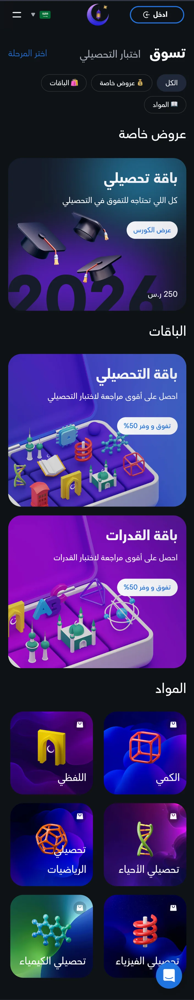
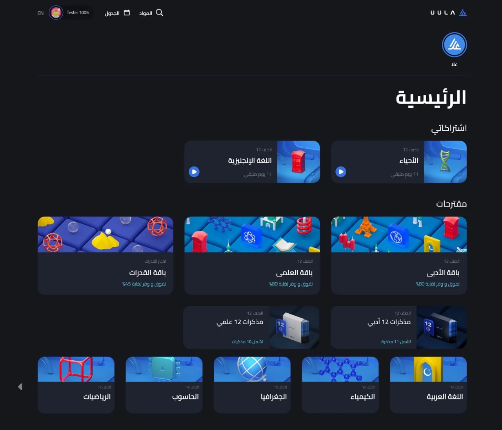
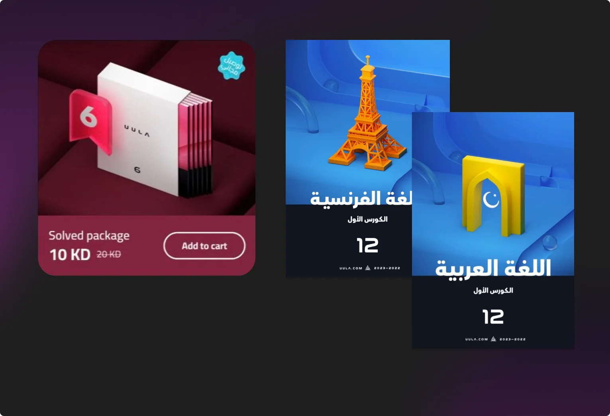

UULA
3D illustrations, animations and video for Kuwait's largest EdTech platform and its Saudi version.
The task
Studying versus games and social media.
UULA is an online learning platform for school students: video lessons, notes, tests and questions to teachers, following Kuwait's curriculum. The Saudi version also prepares students for the Qudurat and Tahsili exams.
For these students, studying is a boring obligation, and the product competes for their attention with games and social media. My job was to make it beautiful and fun for kids: build a recognisable 3D style and fill the website and app with it. Assets had to ship fast, since new courses, bundles and seasonal campaigns kept coming.
Style
Plastic toys and building blocks.
Bright, saturated colours, soft rounded shapes and tactile materials: glossy and matte plastic. Soft studio light with highlights. One hero object on a platform or an “island”, with small details around it.
The same illustration shipped in different colourways to fit each page.


What I did
Website, store, app, campaigns.
Website and landing pages
Illustrations and animations for the uula.com/sa home page and landing pages: the top students page with the “10” trophy, bundle and course pages.



Top students: “10” trophy and A+ case

Tahsili bundle page
Store
Cases: course bundles for a grade, with subject figures inside. Subject tiles.

App
Subject covers in My Subscriptions and recommendations, in-app illustrations and animations, Lottie micro-interactions.

Covers and notes
Course covers and printed-notes cards.

Campaigns and video
Lottie animations for seasonal campaigns such as Ramadan. Marketing videos for UULA's Instagram and ads for Kuwait.
Lottie ready for development
I prepared animations ready for developers: light file size, defined start and end points, tied to user actions.
AI in production
Illustration cycle: from several weeks to one.
Before, every object was modelled in Blender from scratch, and one illustration took several weeks. I moved ideation to Midjourney and kept Blender for the final build. The style stayed consistent.
- ConceptOptions in Midjourney from the brief.
- ApprovalOne option is picked.
- BuildModel in Blender following the style rules.
- AnimationAfter Effects or Blender, exported to MP4 or Lottie.
Results
Faster delivery, stronger launches.
- +10%launch effectiveness
- −20%time to market
- 1 weekillustration cycle instead of several
On the website: page depth +12–18%, time on site +15–25%, clicks to feature and pricing pages +10–14%, first-screen bounce −8–12%.